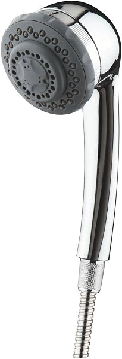
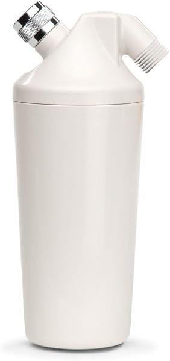
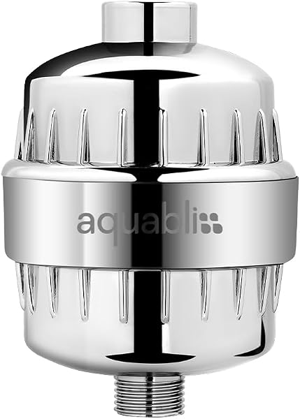
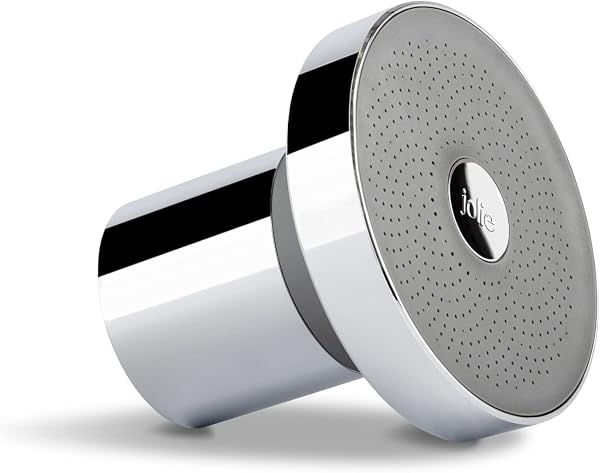
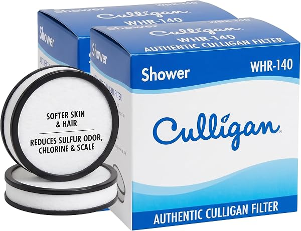
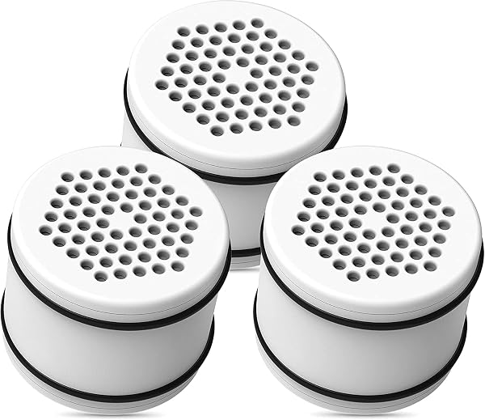

Best Shower Filters (2026): Certification, Filter Life and Fit Compared
PureFlow Lab is reader-supported. We may earn a commission when you buy through links in this guide — at no extra cost to you. As an Amazon Associate, we earn from qualifying purchases. See our Disclosure for details.
Shower filters are mainly about chlorine. Most use carbon and/or KDF media, and the relevant certification standard is NSF/ANSI 177, which covers reduction of free available chlorine in shower filters. This guide compares shower filters by what each listing actually states: media, certification or testing, filter life and fit. We don't lab-test products, and we don't repeat the skin and hair claims makers use in their marketing.
What to look for
- NSF/ANSI 177. Look for "certified" versus "tested to" or "tested according to" the standard. Certified means an independent body (like IAPMO) certified it.
- Filter life. Most list about 6 months or 10,000 gallons; some list 3–6 months.
- Fit. Standard U.S. shower arms are ½". Inline filters go between the arm and your existing head; filtered showerheads replace the head.
- Replacement cartridges. Check the cartridge part number and availability before you buy.
- Know the limits. Shower filters are not RO. They don't reduce total dissolved solids, and for whole-home treatment you'd need a whole-house system.
Shower filters compared
| Filter | Type | Certification / testing (per listing) | Filter life (per listing) |
|---|---|---|---|
| Culligan HSH-C135 | Handheld filtered showerhead | Tested according to NSF/ANSI 177 (free chlorine); replacement WHR-140 cartridges certified by IAPMO against 177 | 10,000 gal or 6 months |
| Aquasana AQ-4100NSH | Inline (no head) | Tested to NSF-177; reduces 90%+ chlorine, per Aquasana | 6 months or 10,000 gal |
| AquaBliss SF100 | Inline (no head) | Not stated | 3–6 months |
| Jolie Filtered Showerhead | Filtered showerhead | KDF-55 and calcium sulfite media, per Jolie | Replaceable cartridge; see listing |

Culligan HSH-C135 Handheld Filtered Showerhead
Reduces sulfur odor, chlorine and scale; 2.5 gpm max flow, 5 spray settings, 5-foot hose, 5-year limited warranty; tested according to NSF/ANSI 177 for free chlorine, per the listing. Filter life up to 10,000 gallons or 6 months.
Check Price on Amazon →
Aquasana AQ-4100NSH Shower Filter
Inline filter with coconut-shell carbon and copper-zinc media; tested to NSF-177 and reduces 90%+ of chlorine, per Aquasana. Up to 6 months or 10,000 gallons; fits standard ½" shower arms.
Check Price on Amazon →
AquaBliss SF100 Shower Filter
Reduces chlorine, sediment and organic impurities with a vitamin C stage for chloramine at lower levels, per AquaBliss. SFC100 cartridges last 3–6 months; installs without tools and adds about 3–4 inches, per the listing.
Check Price on Amazon →
Jolie Filtered Showerhead
Filtered showerhead using a KDF-55 and calcium sulfite blend, per Jolie. Designed for standard U.S. ½" NPT shower pipes; cartridge changes without tools, per the listing.
Check Price on Amazon →Replacement cartridges

Culligan WHR-140 Replacement Cartridge (2-pack)
Fits Culligan WSH-C125, HSH-C135, ISH-100 and other listed Culligan heads. Tested and certified by IAPMO against ANSI 177; up to 10,000 gallons or 6 months, per the listing. Culligan says its showerhead warranty is void with non-Culligan cartridges.
Check Price on Amazon →
Waterdrop WHR-140 Compatible Cartridge
KDF-based replacement for Culligan WHR-140, listed for the same Culligan heads; replace every 6 months or 10,000 gallons, per the listing.
Check Price on Amazon →Which should you choose?
- You want a certification you can check: the Culligan system, whose official WHR-140 cartridges are certified by IAPMO against NSF/ANSI 177.
- You want to keep your current showerhead: an inline filter like the Aquasana or AquaBliss.
- You want a handheld: the Culligan HSH-C135.